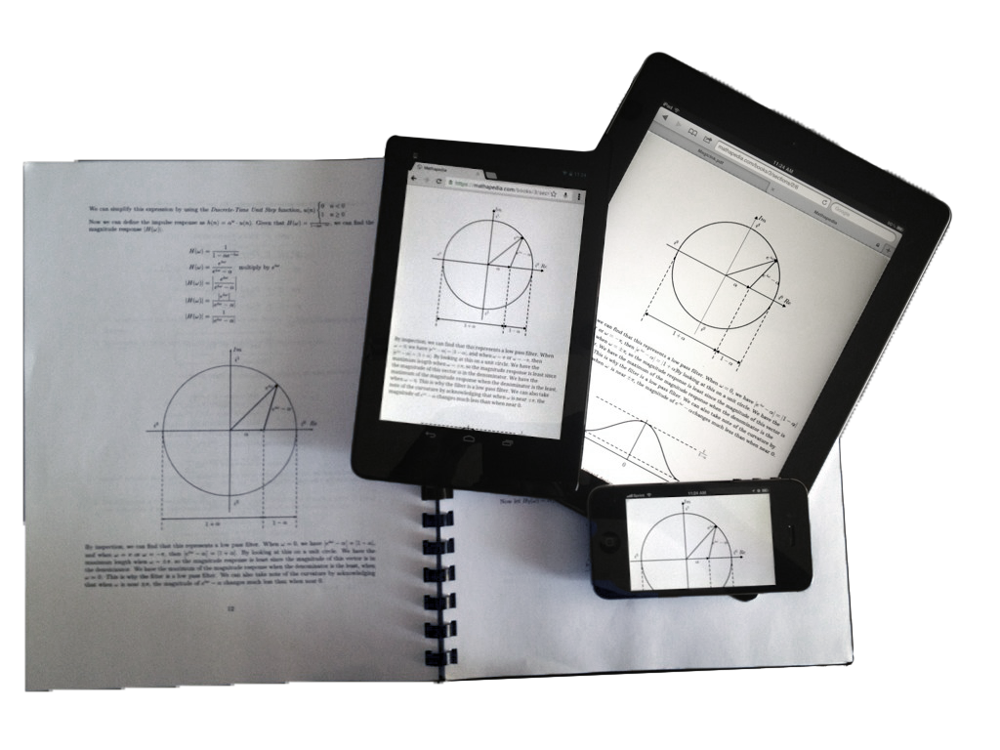

LaTeX2HTML5
Author interactive math equations and diagrams online using $\LaTeX$ and PSTricks

This project is the frontend only version of the code that originated from Mathapedia to enable real-time, dynamic authorship of mathematical ebooks
$$\frac{\delta}{\delta u} \int_{birth}^{death} f(life) du = \mbox{your life}$$
Simply download and include the script on your MathJax enabled website:
<script type="text/javascript" src="latex2html5.min.js"></script>
Check out the examples below or view source to get started.
$$
% create the definition symbol
\def\bydef{\stackrel{\Delta}{=}}
%\def\circconv{\otimes}
\def\circconv{\circledast}
\newcommand{\qed}{\mbox{ } \Box}
\newcommand{\infint}{\int_{-\infty}^{\infty}}
% z transform
\newcommand{\ztp}{ ~~ \mathop{\mathcal{Z}}\limits_{\longleftrightarrow} ~~ }
\newcommand{\iztp}{ ~~ \mathop{\mathcal{Z}^{-1}}\limits_{\longleftrightarrow} ~~ }
% fourier transform pair
\newcommand{\ftp}{ ~~ \mathop{\mathcal{F}}\limits_{\longleftrightarrow} ~~ }
\newcommand{\iftp}{ ~~ \mathop{\mathcal{F}^{-1}}\limits_{\longleftrightarrow} ~~ }
% laplace transform
\newcommand{\ltp}{ ~~ \mathop{\mathcal{L}}\limits_{\longleftrightarrow} ~~ }
\newcommand{\iltp}{ ~~ \mathop{\mathcal{L}^{-1}}\limits_{\longleftrightarrow} ~~ }
\newcommand{\ftrans}[1]{ \mathcal{F} \left\{#1\right\} }
\newcommand{\iftrans}[1]{ \mathcal{F}^{-1} \left\{#1\right\} }
\newcommand{\ztrans}[1]{ \mathcal{Z} \left\{#1\right\} }
\newcommand{\iztrans}[1]{ \mathcal{Z}^{-1} \left\{#1\right\} }
\newcommand{\ltrans}[1]{ \mathcal{L} \left\{#1\right\} }
\newcommand{\iltrans}[1]{ \mathcal{L}^{-1} \left\{#1\right\} }
% coordinate vector relative to a basis (linear algebra)
\newcommand{\cvrb}[2]{\left[ \vec{#1} \right]_{#2} }
% change of coordinate matrix (linear algebra)
\newcommand{\cocm}[2]{ \mathop{P}\limits_{#2 \leftarrow #1} }
% Transformed vector set
\newcommand{\tset}[3]{\{#1\lr{\vec{#2}_1}, #1\lr{\vec{#2}_2}, \dots, #1\lr{\vec{#2}_{#3}}\}}
% sum transformed vector set
\newcommand{\tsetcsum}[4]{{#1}_1#2(\vec{#3}_1) + {#1}_2#2(\vec{#3}_2) + \cdots + {#1}_{#4}#2(\vec{#3}_{#4})}
\newcommand{\tsetcsumall}[4]{#2\lr{{#1}_1\vec{#3}_1 + {#1}_2\vec{#3}_2 + \cdots + {#1}_{#4}\vec{#3}_{#4}}}
\newcommand{\cvecsum}[3]{{#1}_1\vec{#2}_1 + {#1}_2\vec{#2}_2 + \cdots + {#1}_{#3}\vec{#2}_{#3}}
% function def
\newcommand{\fndef}[3]{#1:#2 \to #3}
% vector set
\newcommand{\vset}[2]{\{\vec{#1}_1, \vec{#1}_2, \dots, \vec{#1}_{#2}\}}
% absolute value
\newcommand{\abs}[1]{\left| #1 \right|}
% vector norm
\newcommand{\norm}[1]{\left|\left| #1 \right|\right|}
% trans
\newcommand{\trans}{\mapsto}
% evaluate integral
\newcommand{\evalint}[3]{\left. #1 \right|_{#2}^{#3}}
% slist
\newcommand{\slist}[2]{{#1}_{1},{#1}_{2},\dots,{#1}_{#2}}
% vectors
\newcommand{\vc}[1]{\textbf{#1}}
% real
\newcommand{\Real}[1]{{\Re \mit{e}\left\{{#1}\right\}}}
% imaginary
\newcommand{\Imag}[1]{{\Im \mit{m}\left\{{#1}\right\}}}
\newcommand{\mcal}[1]{\mathcal{#1}}
\newcommand{\bb}[1]{\mathbb{#1}}
\newcommand{\N}{\mathbb{N}}
\newcommand{\Z}{\mathbb{Z}}
\newcommand{\Q}{\mathbb{Q}}
\newcommand{\R}{\mathbb{R}}
\newcommand{\C}{\mathbb{C}}
\newcommand{\I}{\mathbb{I}}
\newcommand{\Th}[1]{\mathop\mathrm{Th(#1)}}
\newcommand{\intersect}{\cap}
\newcommand{\union}{\cup}
\newcommand{\intersectop}{\bigcap}
\newcommand{\unionop}{\bigcup}
\newcommand{\setdiff}{\backslash}
\newcommand{\iso}{\cong}
\newcommand{\aut}[1]{\mathop{\mathrm{Aut(#1)}}}
\newcommand{\inn}[1]{\mathop{\mathrm{Inn(#1)}}}
\newcommand{\Ann}[1]{\mathop{\mathrm{Ann(#1)}}}
\newcommand{\dom}[1]{\mathop{\mathrm{dom} #1}}
\newcommand{\cod}[1]{\mathop{\mathrm{cod} #1}}
\newcommand{\id}{\mathrm{id}}
\newcommand{\st}{\ |\ }
\newcommand{\mbf}[1]{\mathbf{#1}}
\newcommand{\enclose}[1]{\left\langle #1\right\rangle}
\newcommand{\lr}[1]{\left( #1\right)}
\newcommand{\lrsq}[1]{\left[ #1\right]}
\newcommand{\op}{\mathrm{op}}
\newcommand{\dotarr}{\dot{\rightarrow}}
%Category Names:
\newcommand{\Grp}{\mathbf{Grp}}
\newcommand{\Ab}{\mathbf{Ab}}
\newcommand{\Set}{\mathbf{Set}}
\newcommand{\Matr}{\mathbf{Matr}}
\newcommand{\IntDom}{\mathbf{IntDom}}
\newcommand{\Field}{\mathbf{Field}}
\newcommand{\Vect}{\mathbf{Vect}}
\newcommand{\thm}[1]{\begin{theorem} #1 \end{theorem}}
\newcommand{\clm}[1]{\begin{claim} #1 \end{claim}}
\newcommand{\cor}[1]{\begin{corollary} #1 \end{corollary}}
\newcommand{\ex}[1]{\begin{example} #1 \end{example}}
\newcommand{\prf}[1]{\begin{proof} #1 \end{proof}}
\newcommand{\prbm}[1]{\begin{problem} #1 \end{problem}}
\newcommand{\soln}[1]{\begin{solution} #1 \end{solution}}
\newcommand{\rmk}[1]{\begin{remark} #1 \end{remark}}
\newcommand{\defn}[1]{\begin{definition} #1 \end{definition}}
\newcommand{\ifff}{\LeftRightArrow}
\newcommand{\rr}{\R}
\newcommand{\reals}{\R}
\newcommand{\ii}{\Z}
\newcommand{\cc}{\C}
\newcommand{\nn}{\N}
\newcommand{\nats}{\N}
\newcommand{\strong}[1]{\textbf{#1}}
\newcommand{\set}[1]{\textit{#1}}
$$

Dan Lynch © LaTeX2HTML5 2013